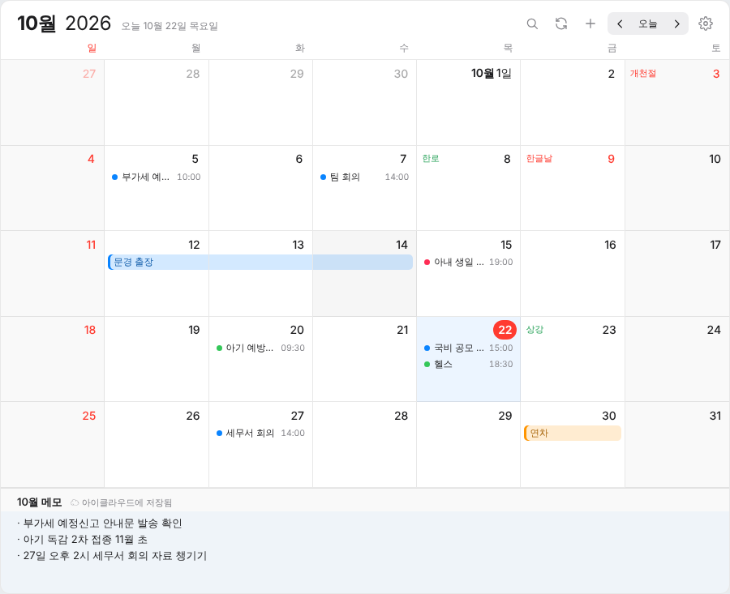
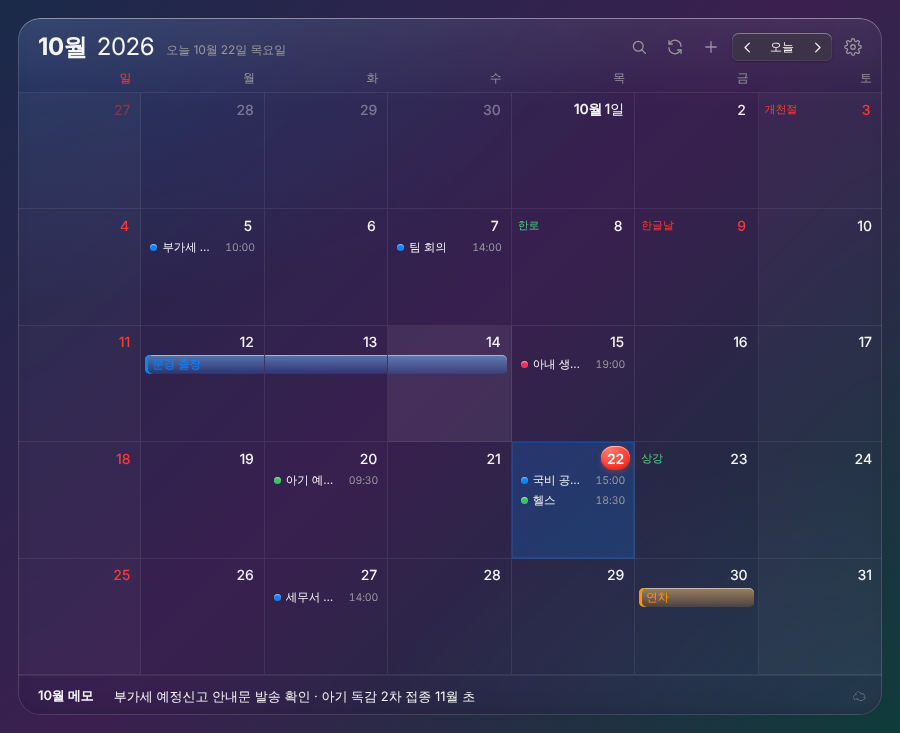

아이클라우드·구글 캘린더와 연결해 PC에서 일정을 보고, 더블클릭으로 바로 추가합니다. 추가한 일정은 휴대폰에도 그대로 들어갑니다. 달력 아래엔 그달 메모, 지난 일정은 검색으로.


설치 파일을 실행하면 알아서 설치되고 달력이 켜집니다.
위의 윈도우용 다운로드를 누르면 DeskCal-Setup.exe가 다운로드 폴더에 저장됩니다.
DeskCal-Setup.exe를 더블클릭합니다. 파란 Windows의 PC 보호 창이 뜨면 추가 정보 → 실행을 누르세요. 설치가 끝나면 달력이 켜지고 바탕화면에 바로가기가 생깁니다.
달력 오른쪽 위 톱니바퀴를 눌러 아이클라우드 계정을 연결합니다. 연결하는 방법은 바로 아래에 있습니다.
개발자 등록을 하지 않은 개인 프로그램이라 처음 한 번만 허락이 필요합니다.
맥용 다운로드로 받은 DeskCal-Mac-arm64.dmg를 열고, DeskCal 아이콘을 응용 프로그램 폴더로 끌어 넣습니다.
DeskCal을 열었을 때 '확인할 수 없음' 창이 뜨면 완료를 누르고, 시스템 설정 → 개인정보 보호 및 보안 맨 아래 그래도 열기를 누릅니다.
달력은 바탕화면에 뜨고 Dock에는 나타나지 않습니다. 숨기기·설정·종료는 화면 맨 위 메뉴 막대의 달력 아이콘에서 합니다.
애플은 다른 프로그램이 캘린더를 쓸 때 진짜 비밀번호 대신 '앱 암호'를 쓰게 합니다. 언제든 지우면 바로 끊깁니다.
account.apple.com에 로그인한 뒤 로그인 및 보안 → 앱 암호 → ＋를 누르고 이름에 DeskCal을 적습니다.
xxxx-xxxx-xxxx-xxxx 모양의 암호가 나옵니다. 창을 닫으면 다시 볼 수 없으니 바로 복사하세요.
톱니바퀴 → 아이클라우드에 애플 ID(이메일)와 앱 암호를 넣고 연결을 누릅니다. 내 캘린더 목록이 보이면 연결된 것입니다.
그달 메모를 적으면 바로 저장됩니다. 아이클라우드를 연결하면 윈도우와 맥에서 같은 메모를 보고, 아이폰 캘린더에도 매달 1일에 '📝 메모'로 보입니다.
돋보기 또는 Ctrl+F(맥은 ⌘F). 3년 전부터 1년 뒤까지 제목·장소·메모에서 찾고, 누르면 그 날짜로 갑니다.
대한민국 공휴일이 기본으로 들어 있고, 한로·상강 같은 절기와 음력 날짜도 날짜 칸에 표시합니다.
날짜를 더블클릭하면 입력 창이 열립니다. 하루 종일, 여러 날짜, 알림, 메모까지 넣을 수 있습니다.
톱니바퀴 → 구글 → 구글 계정으로 로그인. 아이클라우드와 구글 일정을 한 달력에서 봅니다. 처음에 '확인되지 않은 앱' 화면이 나오면 고급 → DeskCal(으)로 이동을 누르세요.
여덟 가지 색으로 일정을 나눠 봅니다. 구글 일정은 휴대폰 구글 캘린더에도 같은 색으로 보입니다.
일정을 다른 날짜로 끌어다 놓으면 시간은 그대로 두고 날짜만 바뀝니다.
윈도우 설정을 따라가거나 직접 고릅니다. 윈도우 11에서는 뒤가 흐리게 비치는 효과도 씁니다.
평소에는 창이 고정되고, 톱니바퀴 → 위치·크기 조정에서만 옮기거나 크기를 바꿉니다.
개인이 만든 프로그램이라 마이크로소프트 서명이 없어 처음 실행할 때 경고가 뜹니다. 추가 정보 → 실행을 누르면 됩니다.
애플 ID·앱 암호와 구글 로그인 허가증은 내 PC에만 암호화되어 저장되고, 다른 곳으로 보내지지 않습니다. 구글 비밀번호는 구글 화면에서만 입력하며 DeskCal은 알지 못합니다.
아이클라우드 일정의 색은 DeskCal에서만 보입니다. 아이폰 캘린더 앱은 캘린더 단위로만 색을 정하기 때문입니다. 구글 일정의 색은 휴대폰 구글 캘린더에도 보입니다.
매주 회의처럼 반복되는 일정은 DeskCal에서 볼 수 있지만, 수정과 삭제는 아이폰에서 해 주세요.
망이 분리된 PC에서는 아이클라우드에 접속하지 못할 수 있고, 프로그램 설치가 보안 규정에 걸릴 수 있습니다. 집 PC에서 쓰시길 권합니다.
윈도우 설치판은 새 버전을 알아서 받아 두었다가 다시 켤 때 적용합니다. 맥은 새 버전이 나오면 달력 위에 알림이 뜨니, 이 페이지에서 dmg를 다시 받아 덮어 넣으면 됩니다. 설정·연결·메모는 그대로 남습니다.
맥에서 처음 연결할 때나 새 버전을 넣은 뒤 'DeskCal Safe Storage'를 쓰겠냐고 물으면 항상 허용을 누르세요. 앱 암호를 맥 열쇠고리에 안전하게 보관하는 과정입니다.
윈도우 설정 → 앱 → 설치된 앱에서 DeskCal 달력을 제거하면 됩니다.